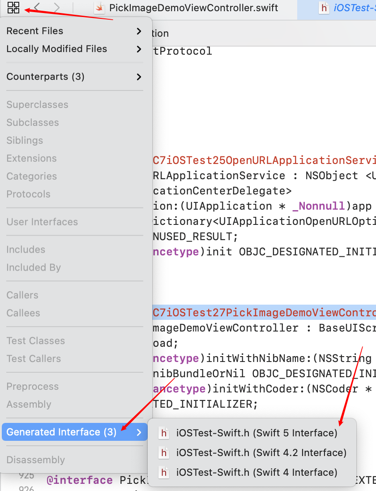
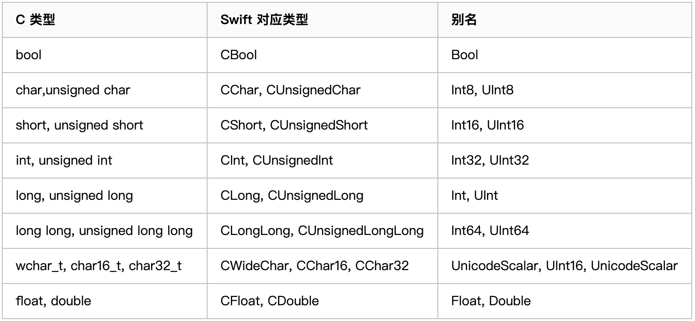

接口

相互调用
Swift 反射
我们一般是通过NSClassFromString函数来对类进行反射，在 Swift 中因为命名空间的缘故在 Macho 中的类名实际上是混淆的。
mangle：copySwiftV1MangledName函数，
demangle函数copySwiftV1DemangledName
可以通过桥接文件看下 Swift 类对应生成的类名，如果在类上加上 @objc(className)，可以使生成的类名与 className 一致，也就是不会再有混淆了。
但这样处理命名空间也就失去了意义，不同 Module 之间类名不能重复了。
这个根据 Swift 的版本的不同，可能会有不同。
将 C++ 源程序标识符 (
original C++ source identifier) 转换成 C++ ABI 标识符 (C++ ABI identifier) 的过程为mangle，反过来的过程称为demangle。C++ 中有c++filt这个工具。
主工程
在主工程中，我们可以利用桥接文件实现 OC、swift 代码的混编。
Swift 调用 OC
Swift 调用 OC 需要借助桥接文件，将 OC 的.h 文件在桥接文件中引入，然后 swift 就可以直接使用在.h 文件中定义的接口以及属性了；可以通过Build Settings 中的 Objective-C Bridging Header 设置桥接文件地址
OC 调用 Swift
OC 调用 swift 时，需要在调用的的 OC 文件中引入一个.h 头文件，其格式为 #import "ProductModuleName-Swift.h"。引入后需要重新编译一下。（实际编译会将工程的所有.swift 文件中涉及到的接口以及属性转化成 oc 代码全都整合到这个.h 文件中，进入该文件中就能明白了）。可以通过Build Settings 中的 Objective-C Generated Interface Header Name 自定义头文件名称。
- 当 class 是 NSObject 的子类时，这个类便可以在 “ProductModuleName-Swift.h”中 找到，默认携带 init 构造方法，也就是说类必须继承 NSObject；
- 当类中的非 private 以及非 fileprivate 方法以及变量被 @objc 修饰时，该变量或者方法便可以在 “Product Name-Swift.h”中 找到；
- 当在类上添加 @objcMembers 修饰时，该类中所有的 非 private 以及非 fileprivate 方法以及变量 都可以在 “Product Name-Swift.h”中 找到；
如果需要 OC 与 Swift 中类、方法以及属性的名字不一致，可以在 @objc(OCName) 这种形式为 OC 单独定义名称，比如当 swift 中的类为中文时；
在 swift 4 之前，如果类继承了 NSObject，编译器就会默认给这个类中的所有函数都标记为 @objc，支持 OC 调用。苹果在 Swift4 中，修改了自动添加 @objc 的逻辑：一个继承 NSObject 的 Swift 类不在默认给所有函数添加 @objc。只在实现 OC 接口和重写 OC 方法时，才自动给函数添加 @objc 标识。
Framework 内部
在 Framework 中，不允许使用桥接文件，所以我们不能使用桥接文件的形式进行混编。
Swift 调用 OC
需要将 OC 头文件放置到 Umbrella Header 文件中去
OC 针对 Swift 的更新
NS_SWIFT 系列宏
NS_SWIFT_NAME(_name)
NS_SWIFT_ASYNC(COMPLETION_BLOCK_INDEX)
NS_SWIFT_NOTHROW
NS_SWIFT_UNAVAILABLE(_msg)
NS_SWIFT_UI_ACTOR
NS_SWIFT_ASYNC_NAME(NAME)
NS_SWIFT_ASYNC_NOTHROW
NS_SWIFT_DISABLE_ASYNC
NS_SWIFT_BRIDGED_TYPEDEF
保证 OC 在转成 Swift 对应 API 时被自动转换，比如将 OC 的 NSString 到 Swift，自动变成 String，这个宏在以下情况下会有作用，如
使用NS_SWIFT_BRIDGED_TYPEDEF之前
1 | typedef NSString * ObjcNSString; |
转换成 Swift 之后会变成
1 | public typealias ObjcNSString = NSString |
使用NS_SWIFT_BRIDGED_TYPEDEF之后
1 | typedef NSString * ObjcNSString NS_SWIFT_BRIDGED_TYPEDEF; |
转换成 Swift 之后会变成
1 | public typealias ObjcNSString = String |
NS_SWIFT_ASYNC_THROWS_ON_TRUE
NS_SWIFT_ASYNC_THROWS_ON_FALSE
Swift 调用其他语言
- Swift 调用 OC 或者 Swift 调用 C 的方式都是通过桥接文件的形式（如果 oc 库添加了 modulemap 文件，则可以在 swift 中直接使用 import 的方式导入）。
- Swift 调用 C++ 是无法直接调用的，需要依赖于 C 或者 OC 语言中转一下
当依赖 OC 语言来中转调用 C++，则 OC 的.m 文件后缀需要改为.mm 文件，显式告诉编译器文件内部会包含 C++ 代码。并且需要注意是.mm 文件中不允许引入 Swift 生成的”Product Name-Swift.h”文件，如果引入，该.h 文件会报错。
Swift-C 数据类型对应

Swif与OC对比